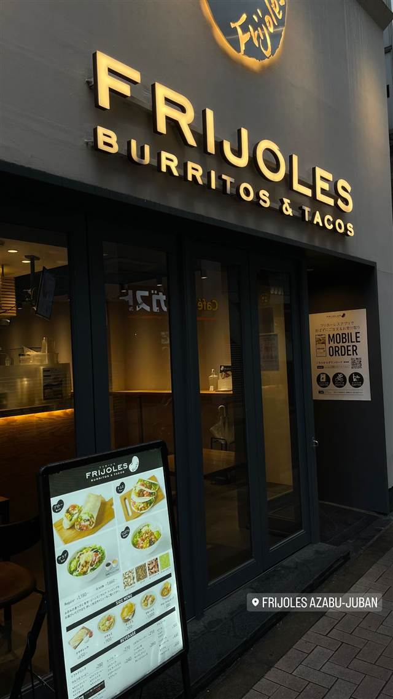

エスニック・各国料理 · メキシコ · 代官山
Hacienda del cielo MODERN MEXICANO
天井高8mの吹き抜けとテラスから東京タワーを望むモダンメキシカン
HACIENDA DEL CIELO
代官山の高層階にあるモダンメキシカンレストラン。店名は「空の家」の意で、東京タワーや六本木ヒルズを望むテラス席が人気。定番のメキシコ料理をモダンにアレンジしたメニューを提供する。
TRIVIA
豆知識
- 店名はスペイン語で「空の家」を意味する
- 天井高8mの吹き抜けに大きなシャンデリアがあり、テラス席からは東京タワーや六本木ヒルズを望める
REVIEWS
世間の評判
3.49食べログ
夜景テラスと目の前で作るワカモレ
- テラス席から東京タワーが見える夜景を評価する声が多い
- 目の前で作るワカモレの体験を評価する人が多い
- 気の利くスタッフの接客を評価する声がある
- 予約が取りにくいという指摘もある
食べログ 口コミ2582件
| 創業 | 2011年頃開業（2021年2月に10周年） |
|---|---|
| 系譜 | レストラン運営企業「HUGE」が手がける業態のひとつ |
| 看板 | モダンメキシカン料理（タコス、ワカモレ、アル・パストールなど定番メキシコ料理をモダンにアレンジ） |
| どこから | 都心 |
| 営業時間 | 月〜金 11:30-23:00 土 11:00-23:00 日 11:00-22:00 |
| 予算 | 昼 ¥1,000～¥1,999 夜 ¥4,000～¥4,999 |
| 定休日 | 無休 |
| 予約 | 予約可 |
| 場所 | 代官山駅 東京都渋谷区猿楽町10-1 マンサード代官山9F |
| メモ | 代官山駅から徒歩5分、9階建てビルの最上階に位置し、メインダイニング・メザニン・オールウェザーテラス席を備える |
食べたもの：メキシコ料理
NEARBY
近い店・同じ系統の店
-
 イタリアン 代官山駅
リストランテASO
昭和初期の洋館で味わう、樹齢300年の欅を望むコース料理
夜 ¥20,000～¥29,999
イタリアン 代官山駅
リストランテASO
昭和初期の洋館で味わう、樹齢300年の欅を望むコース料理
夜 ¥20,000～¥29,999
-
 メキシコ 浦添
タコスの店 トルティーヤ
老舗で30年修行した店主が営む手作りタコスとタコライス
昼 ～¥999 夜 ～¥999
メキシコ 浦添
タコスの店 トルティーヤ
老舗で30年修行した店主が営む手作りタコスとタコライス
昼 ～¥999 夜 ～¥999
-
 メキシコ てだこ浦西駅
キングタコス 長田店
野菜が苦手な米兵向けに考案されたタコライス発祥の系譜
昼 ～¥999 夜 ～¥999
メキシコ てだこ浦西駅
キングタコス 長田店
野菜が苦手な米兵向けに考案されたタコライス発祥の系譜
昼 ～¥999 夜 ～¥999
-
 メキシコ 北参道
FONDA DE LA MADRUGADA（フォンダ・デ・ラ・マドゥルガーダ）
内装をメキシコから輸入し、夕方以降はマリアッチが店内を回り生演奏する
昼 ¥3,000～¥3,999 夜 ¥6,000～¥7,999
メキシコ 北参道
FONDA DE LA MADRUGADA（フォンダ・デ・ラ・マドゥルガーダ）
内装をメキシコから輸入し、夕方以降はマリアッチが店内を回り生演奏する
昼 ¥3,000～¥3,999 夜 ¥6,000～¥7,999
-
 メキシコ 代官山
ZEST CANTINA 代官山
恵比寿の大型店が10年越しに代官山で復活したテックスメックス
昼 ¥1,000～¥1,999 夜 ¥3,000～¥3,999
メキシコ 代官山
ZEST CANTINA 代官山
恵比寿の大型店が10年越しに代官山で復活したテックスメックス
昼 ¥1,000～¥1,999 夜 ¥3,000～¥3,999
-

メキシコ 麻布十番 FRIJOLES 麻布十番店 豆・米・肉・サルサを自分好みに選べるブリトー専門店の1号店 昼 ¥1,000～¥1,999 夜 ¥2,000～¥2,999